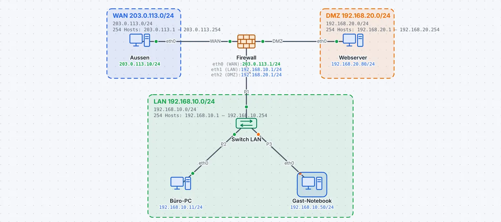
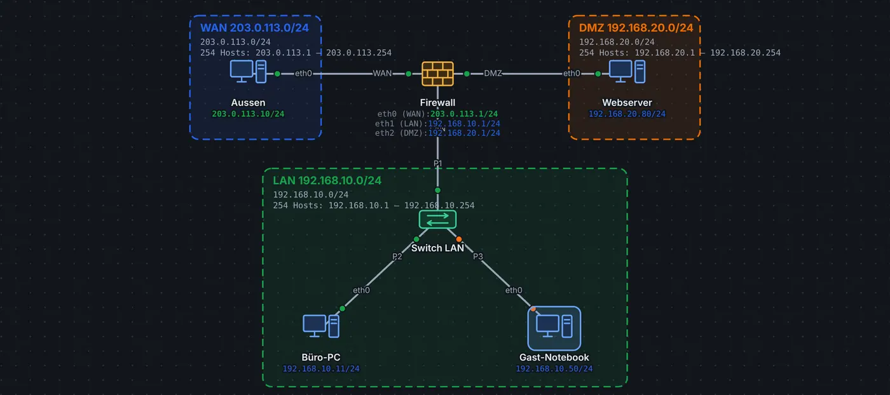

Eine Firewall steht zwischen Netzen, denen man unterschiedlich traut: dem Internet, dem internen Netz und einer DMZ für Server, die von aussen erreichbar sein sollen. Sie routet wie ein Router, lässt aber nur durch, was eine Regel erlaubt.
Zonen
Anschluss
Zone
ab Werk
eth0
WAN (Internet)
neue Verbindungen von hier verboten
eth1
LAN (intern)
darf hinaus
eth2
DMZ (öffentliche Server)
darf hinaus
eth3 …
OPT (weitere)
darf hinaus
Die Firewall ist zustandsbehaftet: Antworten auf erlaubte Verbindungen kommen ohne eigene Regel zurück. Für einen Webserver in der DMZ braucht es eine Regel wie «Erlauben TCP 80 zum Webserver, eingehend an WAN», meist zusammen mit einer Portweiterleitung (NAT und PAT). Anders als ein Router schützt sie mit ihren Regeln auch sich selbst: Vom WAN antwortet sie ab Werk weder auf Ping noch auf SSH.
Regeln lesen
Die Regeln gelten von oben nach unten, die erste passende entscheidet, am Ende steht die Standardregel. In der Simulation zählt jede Regel ihre Treffer, und die Konsole meldet blockierte Pakete. Wie Regeln aufgebaut sind, erklärt Firewall-Regeln (Paketfilter).
So geht es in leyoNET
Derselbe Text wie in der Hilfe der App (Taste F1).
Firewall
Eine Firewall als eigenes Gerät: Sie routet wie ein Router, filtert aber ab Werk. Die Anschlüsse heissen nach ihrer Zone:
eth0 (WAN): zum Internet bzw. Provider
eth1 (LAN): internes Netz
eth2 (DMZ): Server, die von aussen erreichbar sein sollen
eth3 … (OPT): weitere Zonen
Ab Werk: zustandsbehaftet, von LAN, DMZ und OPT nach aussen erlaubt, alles andere verboten. Antworten kommen zurück, neue Verbindungen vom WAN brauchen eine eigene Regel, z.B. «Erlauben TCP 80 zum Webserver, eingehend an WAN». Anders als ein Router schützt sie mit denselben Regeln auch sich selbst: Vom WAN antwortet sie ab Werk weder auf Ping noch auf SSH (Pakete der eigenen VPN-Gegenstellen sind ausgenommen).
Einstellen im Reiter Firewall oder auf der Befehlszeile (firewall rule allow tcp any 192.168.2.80 port 80 in wan, show firewall). Daneben kann sie alles, was ein Router kann: NAT/PAT, Port-Weiterleitung, VPN (IPsec), statische und dynamische Routen. Siehe Firewall.
Beispiel ansehen


Firewall-Gerät und ACL
Eine eigene Firewall trennt WAN, LAN und DMZ; eine Zugriffsliste am Switch-Port lässt Gäste nur auf den Webserver.
«Aussen» ruft den Webserver in der DMZ auf (erlaubt) und pingt den Büro-PC (Firewall blockiert). Dann pingt das Gast-Notebook den Büro-PC (ACL verwirft) und ruft den Webserver auf (erlaubt). Filter «tcp.port == 80 or icmp».
«Live ansehen» öffnet das Netz in leyoNET, die Simulation läuft in einer Schleife. In der App findest du es unter Datei → Demo-Netze, mit Führung Schritt für Schritt.
★★★☆☆Gast-Port mit Zugriffsliste· 3 Ziele · Arbeitsblatt
In leyoNET unter Werkzeuge → Aufgaben-Katalog. Jede Übung prüft sich selbst.
Weiterlesen
Firewall-Regeln (Paketfilter)Regeln von oben nach unten, Standardregel, zustandsbehaftet oder zustandslos – wie ein Router oder eine Firewall entscheidet, was durch darf.
NAT und PATPrivate Netze ins Internet bringen: Port-Übersetzung (PAT), Portweiterleitung, statisches SNAT und DNAT, 1:1-NAT und CGNAT beim Provider.
Zugriffslisten (ACL)Benannte Listen mit permit und deny am Switch-Port oder VLAN-Interface: zustandslos, erste passende Regel gilt, am Ende implizit verweigert.